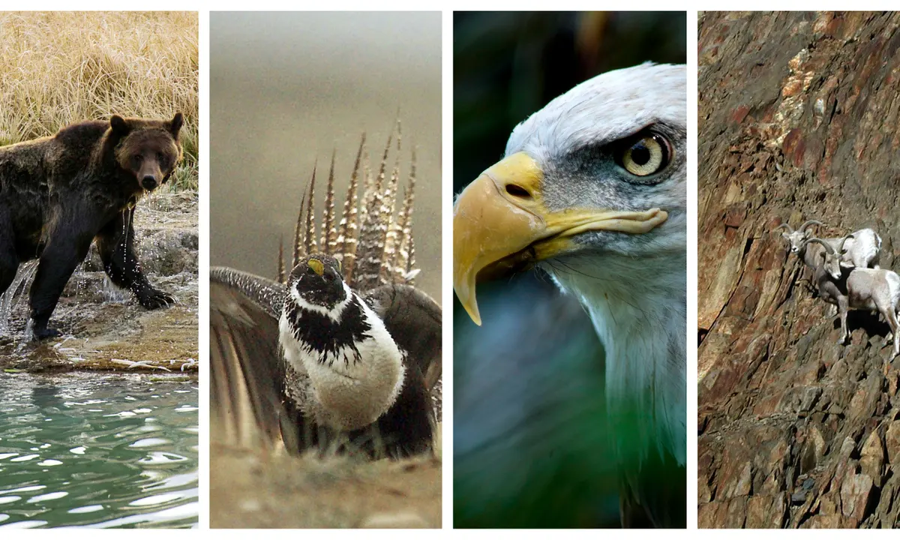
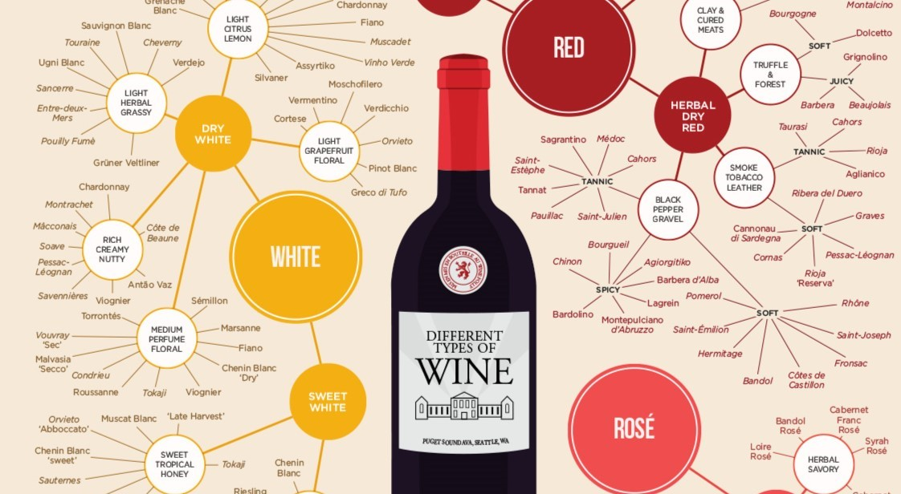

Current Project · In Development
Causal Inference: Data Pipeline and Models
[One-liner placeholder] A two-part project: a modular data ingestion pipeline,
followed by a set of causal inference models.
Keywords: Python, pandas, PySpark, Causal Inference, Data Pipelines
Experimentally compared the performance of various time series
forecasting models across three method classes:
classic statistical, machine learning, and deep learning.
Keywords: Time Series Forecasting, ARIMA, Python, scikit-learn, TensorFlow/Keras, pandas, statsmodels
Binary classification on 70/30 imbalanced bank data using ensembles and 10-fold cross-validation.
Keywords: Classification, Imbalanced Data, scikit-learn, Python, Boosting, Random Forest

SQL exploration of 63,000 at-risk U.S. species in PostgreSQL, with Python visualizations.
Keywords: SQL, PostgreSQL, Data Analysis, EDA, Python, pandas, CTEs

K-means clustering on 13 chemical measurements of wine, with elbow, silhouette, and PCA analysis to choose the number of clusters.
Keywords: Unsupervised Learning, Clustering, scikit-learn, PCA, Python, Data Visualization